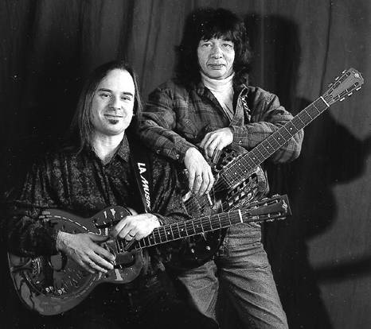
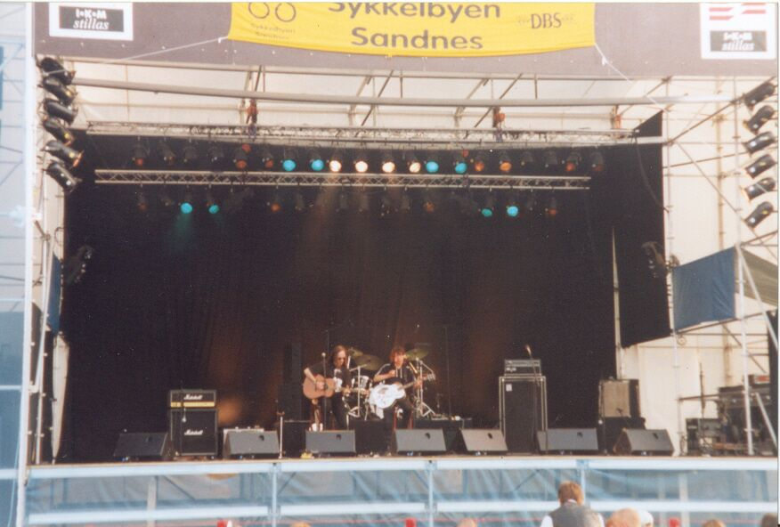
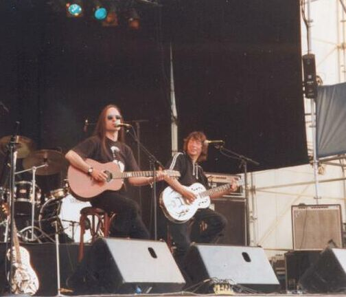
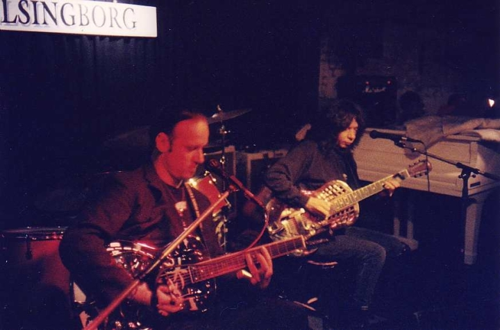
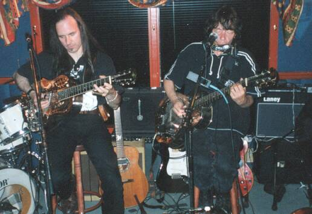
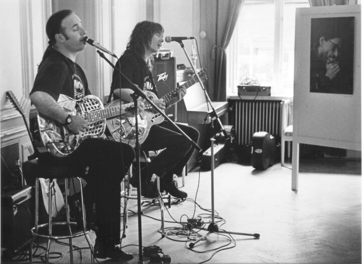
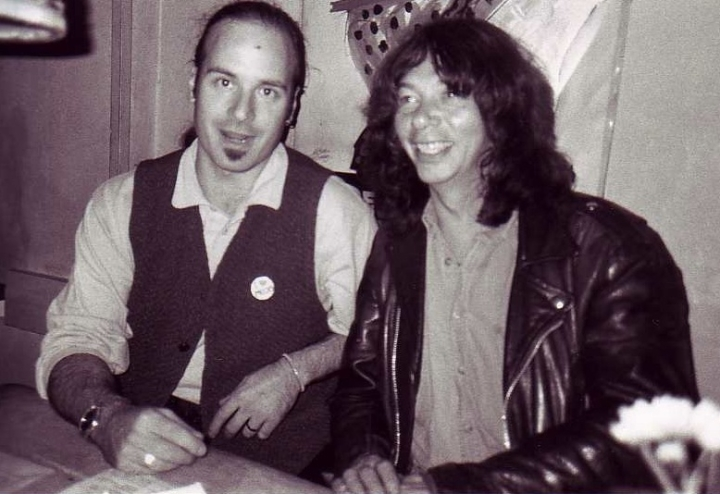
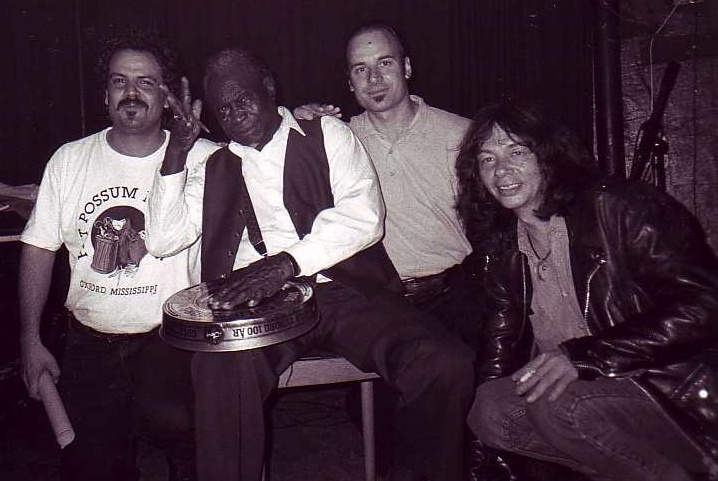
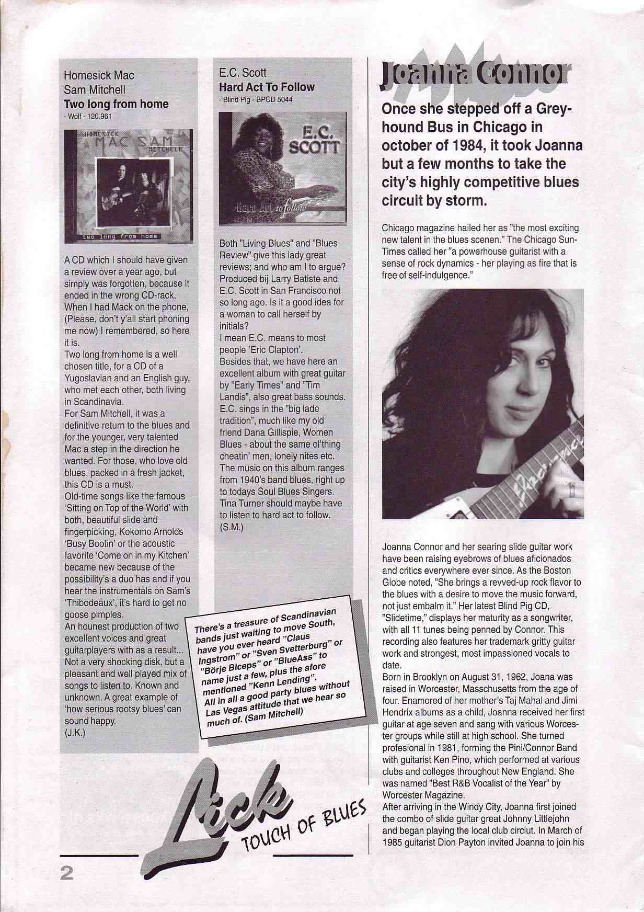

A duo with one of my great early influences on guitar.

When I was 22 or 23 and just starting to play professionally, I discovered recordings by British slide guitar player Sam Mitchell. Sam played in both traditional and modern styles, wrote his own songs, and created extraordinary renditions of old country blues from the 1930s. He had become a true slide guitar master — performing as a solo artist, working as a studio musician, and touring with artists including Long John Baldry and Dana Gillespie. As a studio musician, he played on three songs of Rod Stewart's LP "Every Picture Tells A Story."
Years later, I learned that this same Sam Mitchell was living in Copenhagen — just 90 minutes away. I packed my freshly released CD, took the train, and went to introduce himself at a Mojo Blues Club gig. What he expected to be a brief, respectful hello became a five-year collaboration, a record, and a friendship.
Read the Full Story →
Playing festivals was such fun — here at the Sandnes Cykel Blues Festival in Norway.

Closer angle at us on the same festival.

On the club scene — Jazzklubben in Helsingborg, Sweden.

Club gig in Norway.

Åmål Blues Festival — a gig during the opening of a photo exhibition.

Sam and Mac resting before a gig.

L-R: Scott Barretta, Honeyboy Edwards, Mac & Sam — at Mojo Club in Copenhagen, where we went to watch Honeyboy Edwards play and met him for the first time. In the history of the Delta blues, David 'Honeyboy' Edwards was revered as the ultimate living link to Robert Johnson — the last remaining musician who had walked the same roads, shared the same stages, and spent time with Johnson in the late 1930s. Honeyboy was in Greenwood, Mississippi, on the night in 1938 when Robert Johnson was poisoned. He was supposed to play with him that night, arrived late, and witnessed Johnson falling ill.

Review of the CD "Two Long From Home" in Lick Magazine.
Sam Mitchell passed away in 2006. At the time of writing, it has been 20 years since Sam left us. I honour him on every gig this year — playing one of his songs, or performing songs from their CD together, keeping the memory of this amazing musician and wonderful friend alive.
Read the Full Story →